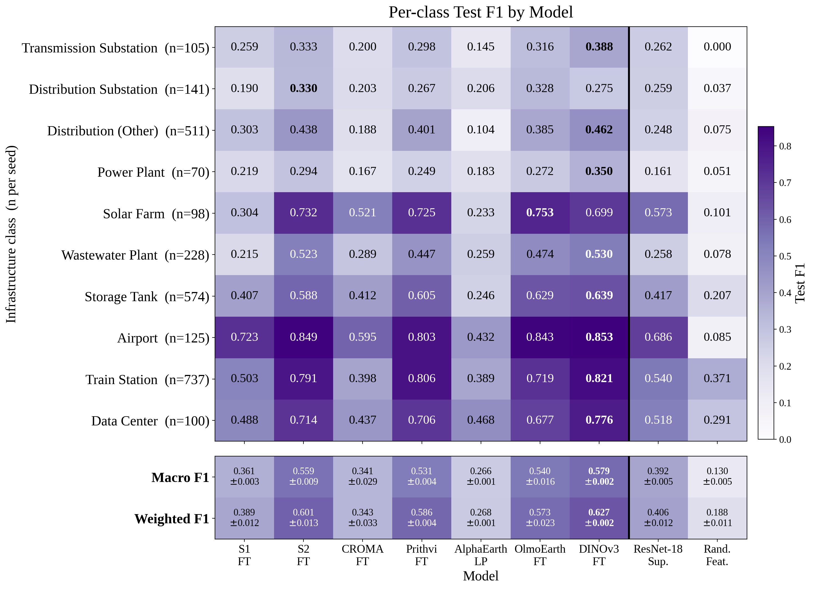
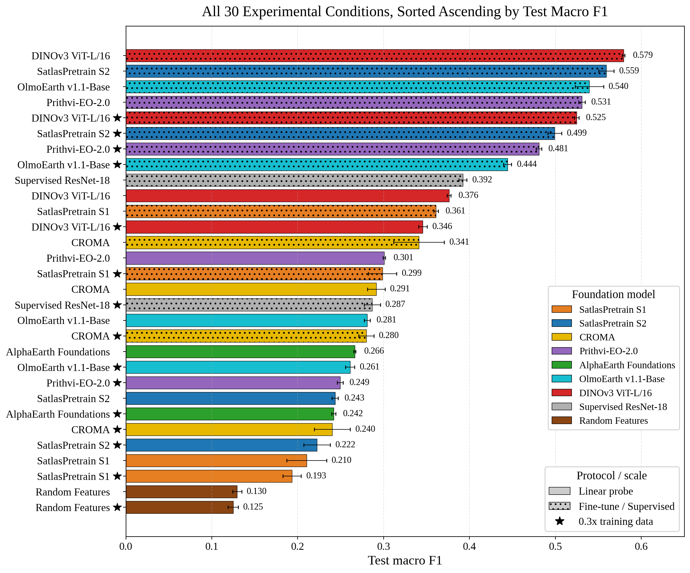
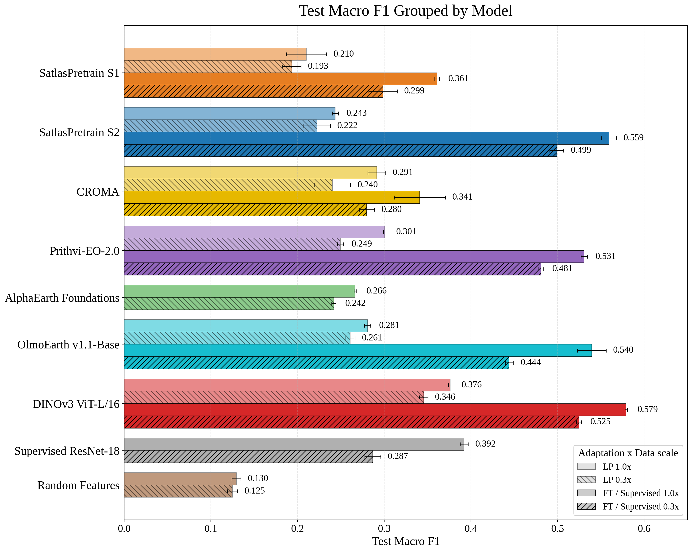
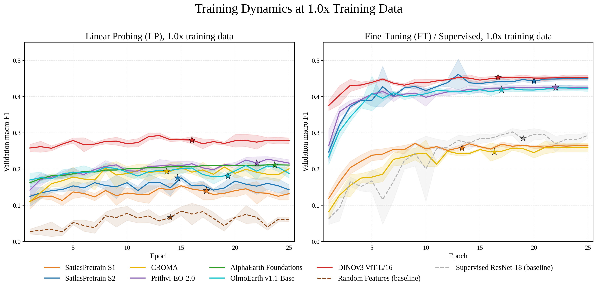
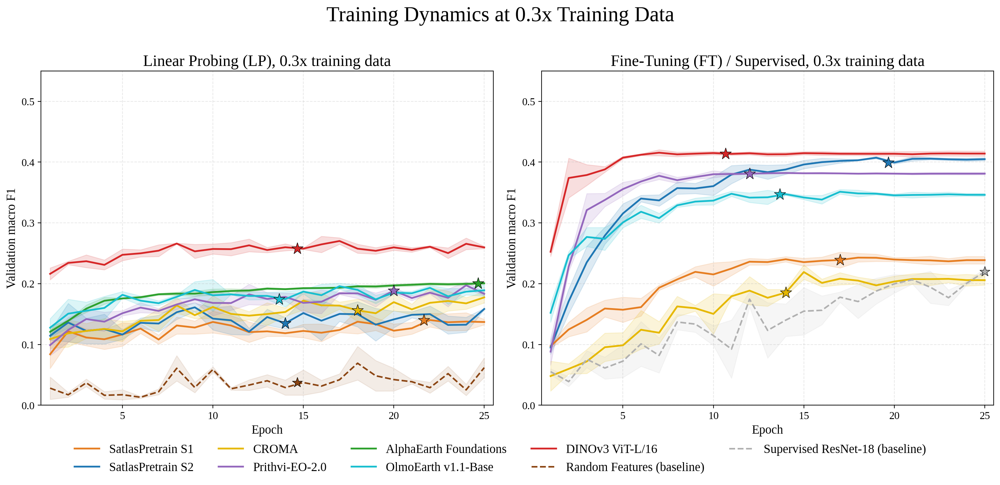

Per-class F1. Best condition per model across the ten
retained classes, with macro and weighted F1 summary rows.

All thirty conditions, sorted by macro F1. Every model,
adaptation protocol, and data scale on one axis.

Grouped by model. Each model's four conditions side by
side; hatching marks the 0.3× data scale.

Training dynamics, 1.0×. Linear probe and
fine-tuning validation curves. Baselines dashed; stars mark the best
checkpoint.

Training dynamics, 0.3×. The same at the reduced
data scale.